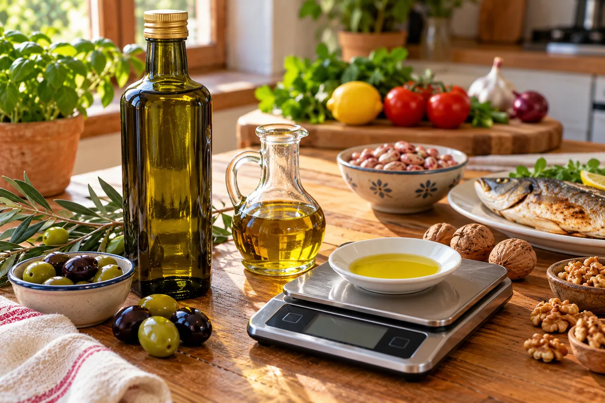

Quanto costa davvero il tuo pasto?
Inserisci i prezzi che hai osservato e le quantità effettivamente usate. Non vengono proposti prezzi medi nazionali e i dati non sono inviati a Per Me.

Risultato
Inserisci i prezzi e calcola.
Limite del calcolo: il totale comprende soltanto i due ingredienti inseriti, non l'intero pasto. Per un costo completo aggiungi separatamente verdure, cereali, energia, altri condimenti e sprechi. I grammi non equivalgono ai millilitri: il costo dell'olio è calcolato sui ml, le calorie richiedono una misura in grammi o una densità documentata.
Per chi ha diabete tipo 2 o cardiopatia
Il costo non dice se il pasto sia clinicamente adatto. Controlla quantità di carboidrati, sale, energia, adeguatezza proteica e indicazioni individuali, soprattutto in presenza di malattia renale o terapie che possono causare ipoglicemia. Leggi la guida di sicurezza alimentare.
La preferenza editoriale per olio extravergine da olive 100% italiane richiede la verifica dell'origine in etichetta; non significa che gli extravergini di altra origine siano nutrizionalmente non validi. Come leggere origine ed etichetta.
Per pianificare la settimana usa il menu mediterraneo e la lista della spesa. Fonti: CREA, Linee guida e tabelle nutrizionali CREA.
Visita la Pagina Facebook Per Me Guide